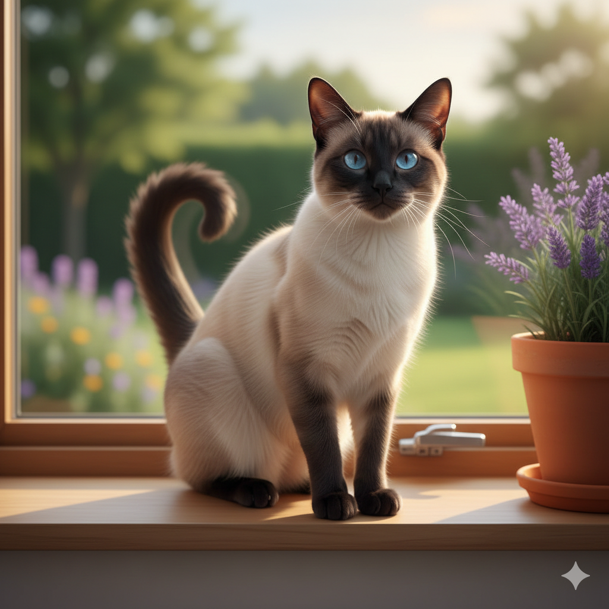
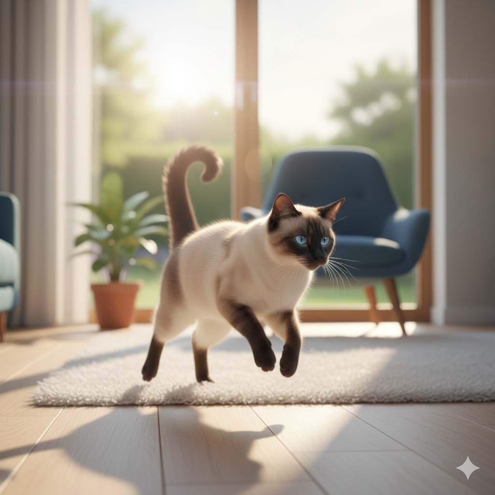

Gerardo
Descripción
Gerardo es un gato mestizo de 4 años de edad. Fue rescatado de la calle, donde vivía en condiciones precarias y sin acceso a comida ni refugio adecuado.
Personalidad
Es un gato muy sociable y cariñoso, le encanta estar en compañía de personas y otros gatos. Tiene un pelaje suave y esponjoso de color blanco anaranjado con rasgos negros, y unos ojos azules muy expresivos.
Información médica
Gerardo está vacunado, desparasitado y esterilizado. Además, cuenta con un historial médico completo y ha sido revisado por nuestro veterinario de confianza.

Información Adicional
Buscamos un hogar amoroso y responsable para Gerardo, donde pueda recibir el cariño y la atención que merece. Si estás interesado en adoptarlo, por favor completa nuestro formulario de adopción en la parte superior izquierda, y nos pondremos en contacto contigo si cumples con el perfil adecuado para cuidar al michi.